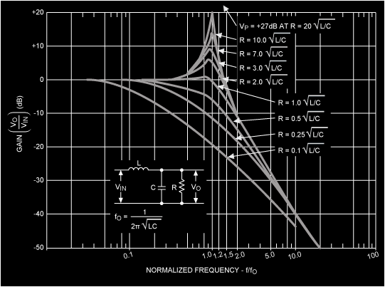
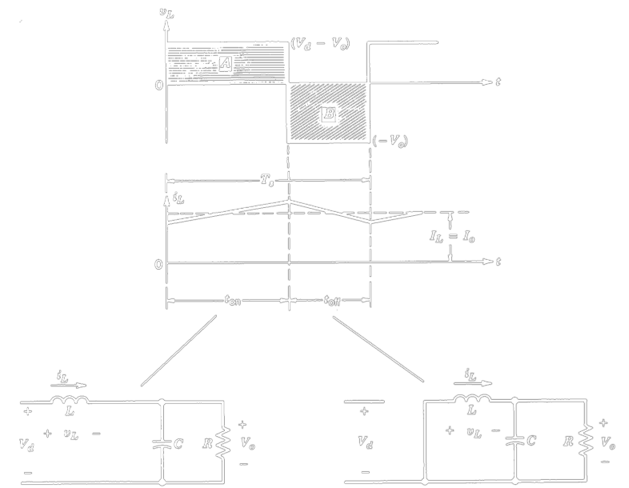

class: nord-dark layout: true --- class: center, middle # Buck Converter Basics ## Ozan Keysan ## [keysan.me](http://keysan.me) --- # DC/DC Converters -- ## Can be used to: -- # Step down the input voltage -- # Step up the input voltage -- # or Both --- # Step-Down (Buck) Converter: ## Simplest Case  --- # Step-Down (Buck) Converter: ## Simplest Case  --- # Let's make the output voltage smoother -- ## Add a Low Pass Filter (eg LC Filter)  --- # Let's make the output voltage smoother -- ## LC Filter Characteristics (More in the following weeks)  --- ## Why do we have the diode for? -- ## Freewheeling Diode: Conducts when switch is off --- ## Operating Modes (in CCM)  CCM: Continuous Conduction Mode